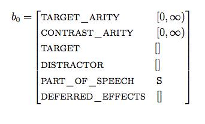
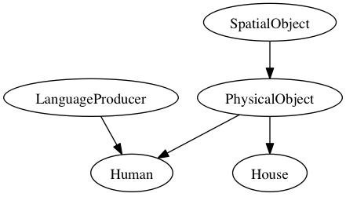

beliefs is a Python v2 library that was developed by Dustin Smith as part of his PhD research on natural language processing. It is covered under the GPLv3 license, which (in short) means it is open source and all derivations must remain so.
Release: 1.0 Date: August 04, 2013
Before you can use this library you must download it and add it to your Python’s import path. When you have done this, you will be able to import it and start using belief states:
from beliefs import *
Belief states are about a referential domain, so you want to initialize them with respect to a referential domain:
r = ReferentialDomain()
b = BeliefState(r)
A referential domain is any class that has a list of referents, each an instance of dicts.DictCell, accessible by calling r.cells. In the next section, I will talk about how to defined a referential domain.
One way to visualize the intensional content of a belief state is to call BeliefState.to_latex() to produce an attribute-value matrix, which when rendered looks like this:
We can compute the size of the belief state, by calling b1.size() and it will return 63. Because our referential domain, \(R\), has 6 members, and an empty belief state will have \(2^{|R|}-1\) possible members. These are only implicitly represented. If we want to enumerate the denotation of the belief state, we can call BeliefState.iter_referents():
b.iter_referents() # returns iter object
# loops over the iterator of just the referent's indices
for targetset in b.iter_referents_tuples():
print targetset
If we want to add a property to the belief state, we can do so by using the BeliefState.merge() method. This method requires two arguments, a path and a value. path should be a list that specifies the component that should be updated, and value should be an instance of a cells.Cell. For example:
value = IntervalCell(5, 100)
b.merge(['target', 'size'], value)
If the corresponding path doesn’t exist (as it doesn’t here), the belief state will add it and we can now access it:
b['target']['size'] # => [5, 100]
b.size() # => 63
We can also change the belief state’s meta-data in a similar way:
b.merge(['targetset_arity'], 2) # 2 gets typecast to IntervalCell(2, 2)
b.size() # => 15
Because \({6\choose 2}=15\); there are 15 unique target sets of size two in this belief state.
Another useful method is BeliefState.copy(), which is what you’ll use to create a copy of the belief state. It’s highly optimized (but there’s still room for improvement!) so that only the mutable components of its cells are copied by value, the rest are copied by reference. You will want to call this whenever you generate a successor, which one does to search over belief states.
The elements in the referential domain must be represented by objects that are instances of dicts.DictCell—essentially they are a collection of (potentially nested) attribute-value pairs. Beneath the hood, belief states are dicts.DictCell; however only its properties target and distractor are explicitly compared with the referential domain.
Another way to author the referential domain, is to use the Referent class. It’s a subclass of dicts.DictCell with some additional object-oriented features, which allow you to use inheritance:
import sys
from beliefs.referent import *
class SpatialObject(Referent):
""" Represents the properties of an object located in 3D space """
def __init__(self):
super(SpatialObject, self).__init__()
self.x_position = IntervalCell()
self.y_position = IntervalCell()
self.z_position = IntervalCell()
class PhysicalObject(SpatialObject):
""" Represents objects that occupy space"""
def __init__(self):
super(PhysicalObject, self).__init__()
self.length = IntervalCell()
self.width = IntervalCell()
self.height = IntervalCell()
class LanguageProducer(Referent):
"""Something that produces a natural language"""
def __init__(self):
super(LanguageProducer, self).__init__()
self.language = SetIntersectionCell(['en', 'fr', 'de', 'pt', 'sp'])
class House(SpatialObject):
"""A dwelling"""
def __init__(self):
super(House, self).__init__()
self.bathrooms = IntervalCell(0, 1000)
class Human(PhysicalObject, LanguageProducer):
""" A physical object that produces speech and has a home """
def __init__(self):
super(Human, self).__init__()
self.name = StringCell()
self.possessions = DictCell({'home': House()})
TaxonomyCell.initialize(sys.modules[__name__])
That TaxonomyCell.initialize weirdness at the end will automatically generate a posets.PartialOrderedCell property called kind with the inheritance structure of your Referent subclasses Each entity will get its class name as its kind:
dustin = Human()
dustin['kind'] #=> Human
dustin['kind'].to_dotfile() #=> writes TaxonomyCell.dot
By calling posets.PartialOrderedCell.to_dotfile(), a DOT file will appear that shows the inheritance structure:
These are type subclasses of Cell data containers, which accumulate and maintain the consistency of partial information updates (via merge() operations).
Specific types of classes are expected to only be merged with cells of their same type. There are a few exceptions where the merged value is first converted into a cell of the corresponding type.
This library is being developed at <https://github.com/EventTeam/beliefs>.